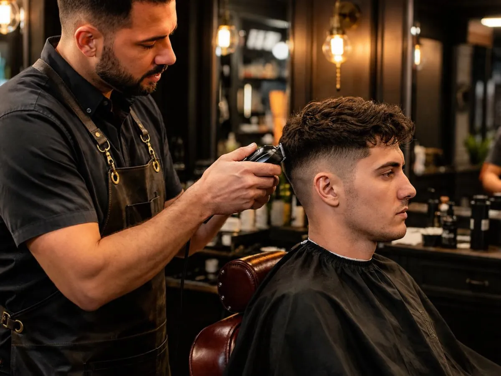

Barbershop in Nijmegen: de beste barbier in jouw wijk
Bijgewerkt op 21 november 2026.
Je baard bijwerken of een strakke fade laten zetten doe je het liefst om de hoek. Daarom geen ranglijst, maar per wijk de barbershop waar wij naartoe zouden gaan. Van een zaak met één stoel aan de Waalhaven tot een barbier in de Lange Hezelstraat waar je op zondag ook naar blues kunt luisteren.

Zo hebben we gekozen
We lazen in oktober 2026 de websites van de ruim veertig barbershops en herenkappers in onze bedrijvengids. Per wijk kozen we de zaak die het meest te bieden heeft: wat je er kunt laten doen, of je zonder afspraak kunt komen, wanneer ze open zijn en wat de zaak bijzonder maakt.
In de 10 beste kappers in Nijmegen staan al een paar zaken die ook baarden doen, zoals Barber Lemar. Die laten we hier weg, zodat je nieuwe adressen leert kennen.
Centrum
Hezelbarbers: knippen met blues op zondag
In de Lange Hezelstraat knippen ze je haar, trimmen ze je baard of doen ze allebei. Maar Hezelbarbers is meer dan een kapperszaak. Er is een eigen academy waar je het vak van barbier leert, en je kunt er zelfs gitaarles volgen. Op zondagmiddag is er een bluessessie.
De zaak is open van woensdag tot en met zondag. Een afspraak maak je online.
Goed voor: wie bij de kapper ook van muziek houdt.
Noviomagus: gewoon binnenlopen aan Plein 1944
Geen zin om vooruit te plannen? Bij Noviomagus aan Plein 1944 loop je zonder afspraak binnen. Je kunt er terecht voor knippen, contouren, een clean shave of een klassieke scheerbeurt met mes en warme handdoek. In de stoel krijg je een biertje of koffie.
Op donderdag zijn ze open tot acht uur en op zondagmiddag ook. Let op: je betaalt alleen met pin. Studenten en jongens van 10 tot 14 jaar zijn ook welkom.
Goed voor: een snelle knipbeurt tussen het winkelen door.
FadesAvenue: van taper tot afro fade
In de Bloemerstraat draait alles om moderne herenkapsels: low fade, taper, bun fade en afro fade, maar ook het klassieke herenkapsel. Voor je baard kun je kiezen uit trimmen, modelleren of een Italian shave.
Je boekt online of loopt gewoon binnen. Kinderen tot en met tien jaar knippen ze ook, studenten betalen minder en wie vaak komt, neemt een abonnement. Op donderdag ben je tot 's avonds welkom.
Goed voor: wie krullen of afrohaar heeft.
Bij het station
The Barberstation: old school aan het Stationsplein
Stap je uit de trein, dan zit je zo in de stoel bij The Barberstation. Dit is een old school barbershop die alleen heren knipt en scheert, met tijdloze kapsels in plaats van snelle trends. Met oude meubels, goede muziek en een koffie of koud biertje voelt het een beetje als een stamkroeg.
The Barberstation is een keten met een eigen lijn producten voor haar, baard en snor. Een afspraak maak je door de zaak in Nijmegen te bellen.
Goed voor: forenzen en liefhebbers van een klassieke coupe.
Nijmegen-Oost
Barber Rakoe: een barbier uit de buurt
Aan de Daalseweg knipt Joost Wagner, die in deze buurt geboren en getogen is. Hij werkt al ruim zeven jaar als barber en heeft hier zijn eigen zaak. Je kiest een knipbeurt, een baardbehandeling of allebei, en strakke contouren horen er altijd bij.
Op de website heet de zaak inmiddels Ark Barbers. Een afspraak maak je online of je belt even.
Goed voor: wie in Oost woont en een vaste barbier zoekt.
Brakkenstein en rond het Radboudumc
Alsaif Barber: haar, baard en huid
In de Kanunnik Boenenstraat in Brakkenstein kun je terecht voor skin fades, buzzcuts, een textured crop of juist halflang haar. Naast knippen en baard trimmen doen ze ook gezichtsbehandelingen en waxen. Dames en kinderen worden hier ook geknipt.
Op donderdag en vrijdag is de zaak open tot negen uur 's avonds. Een afspraak maak je online of telefonisch.
Goed voor: studenten en wie na het werk nog wil.
Barber 024: zeven dagen per week
Aan de Sint Jacobslaan, vlak bij het Radboudumc, vragen ze eerst wat je wilt en gaan ze daarna aan de slag. Wil je jezelf verwennen, vraag dan naar de Italiaanse hot towel shave of de behandeling met een gezichtsmasker.
Barber 024 is zeven dagen per week open, ook op zondag, en je parkeert gratis in de buurt. Kinderen kunnen hier ook terecht.
Goed voor: wie met de auto komt of op zondag wil.
Waalfront
Haven: één stoel en alle tijd
In de nieuwe Waalhaven werkt Cihan, door iedereen Dji genoemd, in een barbershop met precies één stoel. Reken op minstens drie kwartier, zonder haast. Dji staat al sinds zijn vijftiende in het vak en is thuis in fades, tapers, schaarcoupes en baarden.
Je maakt online een afspraak voor woensdag tot en met zaterdag. Parkeren kan op een paar minuten lopen, en een cadeaubon van Haven is een leuk cadeau.
Goed voor: wie een knipbeurt als rustmoment ziet.
Goodfellas: een team van vijf barbers
Liever wat meer reuring? Bij Goodfellas aan de Nina Simonestraat werken vijf barbers. Ze knippen korte en lange herenkapsels voor elk haartype en nemen ook je baard onder handen. Een praatje in de stoel hoort erbij, en rond de feestdagen schenken ze een biertje of whiskey.
Boek online, want de agenda loopt snel vol. Je kunt dinsdag tot en met zaterdag terecht. Je zoon mag ook mee.
Goed voor: wie van gezelligheid in de zaak houdt.
Dukenburg
Hair Station: in winkelcentrum Dukenburg
In winkelcentrum Dukenburg aan het Zwanenveld knipt Hair Station vooral mannen. De barbers kijken naar de trends, maar vooral naar wat bij jou past, en maken het af met een stylingproduct dat jij kiest.
Hair Station is zeven dagen per week open, ook op zondagmiddag. In de parkeergarage sta je de eerste twee uur gratis. Een afspraak maak je online.
Goed voor: een knipbeurt tijdens de boodschappen.
Mister Cuts: ook voor de kleintjes
Aan de Malvert draait het bij Mister Cuts om haircuts en beards. Je kunt hier knippen met of zonder wassen, je baard laten bijwerken of alleen je contouren laten bijwerken. Op woensdag is er een actie voor kinderen.
De zaak werkt met producten van Bandido, die je er ook kunt kopen. Open van dinsdag tot en met zaterdag. Past dat niet, bel dan voor een moment buiten de vaste tijden.
Goed voor: vaders en zonen.
Lindenholt
Makas Hair & Beauty: dichtbij huis
Aan het Leuvensbroek in Lindenholt kom je voor een tondeusebeurt, strakke contouren of het trimmen van je baard, of de combinatie van knippen en baard. Ook vrouwen kunnen hier terecht.
De salon is open van dinsdag tot en met zaterdag. Een afspraak plan je online of je belt.
Goed voor: een snelle knipbeurt in de eigen wijk.
Nijmegen-Noord
Barber Ibo: luisteren voor het knippen
Aan de Griftdijk luisteren ze eerst naar wat je wilt. Daarna kun je kiezen uit knippen met wassen en drogen, alleen de tondeuse rondom of het scheren en in model brengen van je baard. Kinderen worden hier ook geknipt.
Knippen gaat op afspraak, dus bel even. Op woensdag en zondag is de zaak dicht.
Goed voor: gezinnen in Nijmegen-Noord.
Groesbeek
Barbershop Groesbeek: op vrijdag tot acht uur
Midden in Groesbeek, aan de Dorpsstraat, zit een barbershop waar je bijna de hele week terechtkunt. Op vrijdag is de zaak open tot acht uur 's avonds, handig na je werk.
Online boeken kan niet: een afspraak maak je telefonisch. Op zondag is de zaak dicht.
Goed voor: wie in Groesbeek of Berg en Dal woont.
Nog meer goede barbers
- Mr. Beard in de Stikke Hezelstraat: sinds 2019, met korting voor studenten.
- Nozem's 6511 aan de Nieuwe Markt: met een kort adviesgesprek als je niet weet wat bij je past.
- De Heerenkamer in de Houtstraat: een klassieke barbershop met verzorgingsproducten en cadeaubonnen.
- SnipKing in de Burchtstraat: zeven dagen per week open.
- DLO Barbershop aan de Willemsweg: binnenlopen zonder afspraak, ook op zondag.
Alle kappers en barbershops staan in de bedrijvengids onder kappers.
Meer in onze gids kappers in Nijmegen.
Veelgestelde vragen
Welke barbershop in Nijmegen werkt zonder afspraak?
Bij Noviomagus aan Plein 1944, FadesAvenue in de Bloemerstraat en DLO Barbershop aan de Willemsweg kun je zonder afspraak binnenlopen.
Welke barbershop in Nijmegen is op zondag open?
Hezelbarbers (zondagochtend), Noviomagus (zondagmiddag), Barber 024 aan de Sint Jacobslaan, Hair Station in Dukenburg, SnipKing en DLO Barbershop.
Waar laat je een afro fade zetten in Nijmegen?
FadesAvenue in de Bloemerstraat doet afro fades. In de 10 beste kappers in Nijmegen vind je ook True Hair & Beauty, voor afro en textuur.
Waar kun je je kind laten knippen bij een barbier?
Bij Mister Cuts in Dukenburg (actie op woensdag), Barber Ibo in Nijmegen-Noord, FadesAvenue (tot en met tien jaar) en Barber 024.
Waar krijg je een scheerbeurt met mes en warme handdoek?
Bij Noviomagus aan Plein 1944 en bij Barber 024, die een Italiaanse hot towel shave doet.